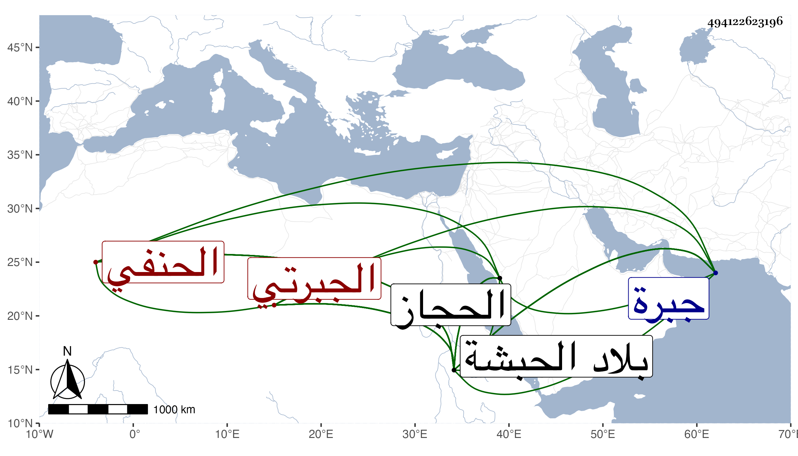

0902Sakhawi.DawLamic.ITO20230111-ara1.EIS1600.494122623196
Biography ID: 494122623196
379
محمد بن أبي البركات بن أحمد بن علي بن محمد بن عمر الملقب ولسمع جمال الدين بن سعد الدين الجبرتي الحنفي الآتي أبوه ويعرف بابن سعد الدين سلطان المسلمين بالحبشة . أصلهم فيما قيل من قريش فرحل من شاء الله من سلفهم من الحجاز حتى نزل بأرض جبرة المعروف الآن بجبرت فسكنها إلى أن ولي الحطى ملك الحبشة مدينة دقات وأعمالها منها لولسمع فعظم وقويت شوكته وحمدت سيرته وتداولها ذريته حتى انتهت لصاحب الترجمة بعد فقد أخيه منصور في سنة ثمان وعشرين وحارب الحطى وشن الغازات ببلادهم حتى ملك كثيرا من بلاده وأطاعه خلق من أعوانه وامتلأت الأقطار من الرقيق الذي سباهم ، ودام على ذلك حتى مات شهيدا في بعض غزواته في جمادى الآخرة سنة خمس وثلاثين فكانت مدة مملكته سبع سنين وكان دينا عاقلا عادلا خيرا وقورا مهابا ذا سطوة على الحبشة أعز الله الإسلام في أيامه ، وملك بعده أخوه بدلاي بن سعد الدين فاقتفى أثره في غزوة وشدته وقد ذكره شيخنا في إنبائه فقال : محمد بن سعد الدين جمال الدين ملك المسلمين من الحبشة كان شجاعا بطلا مديما للجهاد عنده أمير يقال له حرب جوشن كان نصرانيا لا يطاق في القتال فأسلم وحسن إسلامه فهزم الكفار من الحبشة مرارا وأنكى فيهم وغزاهم جمال الدين مرة وهو معه فغنم غنائم عظيمة بحيث بيعت الرأس من الرقيق بربطة ورق وانهزم منهم الحطى صاحب الحبشة مرة بل من جملة سعده هلاك الحطى إسحاق بن داود بن سيف أرغد في أيامه سنة ثلاث وثلاثين وأقيم بعده اندراس ولم يزل صاحب الترجمة على طريقته في الجهاد حتى ثار عليه بنو عمه فقتلوه وكان من خير الملوك دينا ومعرفة وقوة وديانة ويصحب الفقهاء والصلحاء وينشر العدل في أعماله حتى في ولده وأهله وأسلم على يده خلائق من الحبشة ، واستقر بعده في مملكة المسلمين أخوه الشهاب أحمد ويلقب بدلاي فأول ما صنع جد حتى ظفر بقاتل أخيه فاقتص منه ، وطول المقريزي في عقوده ترجمته .
